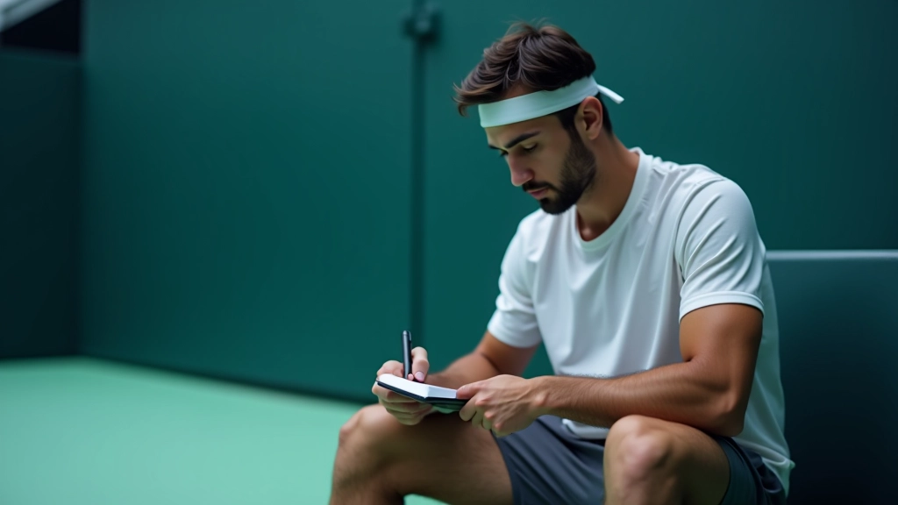

بناء التركيز الذهني قبل المباراة
تقنيات عملية وفعّالة لتهيئة ذهنك وجسدك قبل الدخول إلى الملعب. خطوات بسيطة تُحدث فرقاً حقيقياً في أدائك.


كتبه
فريق التحرير
فريق التحرير والمراجعة
من إعداد فريق التحرير بأكاديمية الذهن للتنس، متخصصون في تقديم إرشادات عملية وسهلة الفهم حول التركيز الذهني واستراتيجية المباراة.
لماذا التركيز قبل المباراة مهم جداً؟
الفرق بين لاعب يدخل الملعب مستعداً ذهنياً وآخر مشتت الانتباه كبير جداً. لا يتعلق الأمر بالمهارات التقنية فقط — بل بالقدرة على التحكم في عقلك قبل أن تبدأ المباراة. عندما تأتي إلى الملعب وأنت مركز تماماً، تشعر بثقة أكثر، وتتخذ قرارات أفضل، وتتعافى بسرعة من الأخطاء.
هذا الدليل سيعلمك الخطوات العملية التي يستخدمها اللاعبون المحترفون. ليست معقدة. لا تحتاج وقتاً طويلاً. لكنها فعّالة جداً.
دقيقة قبل المباراة
تقنيات أساسية
يمكن تطبيقها الآن
تهدئة الجسد بتمارين التنفس
قبل أي شيء، عليك أن تهدئ نظام عصبك. التنفس هو أسرع طريقة لتحقيق هذا. لا تحتاج إلى تنفس معقد — فقط تنفس بطيء وعميق يهدئ جسدك.
الطريقة: استنشق من الأنف ببطء لمدة 4 ثوان، احبس النفس لمدة 4 ثوان، ثم أخرج الهواء من الفم لمدة 6 ثوان. كرر هذا 5 مرات. هذا يقلل معدل ضربات القلب ويهدئ الخوف قبل المباراة. تفعل هذا بينما تتمشى نحو الملعب.
النصيحة: لا تفعل هذا لأول مرة قبل المباراة. مرّن نفسك على هذا التنفس في التدريبات. بهذه الطريقة، جسدك يعرف ماذا يفعل في اليوم الكبير.

تحديد خطة واضحة للمباراة
قبل دخول الملعب بـ 10 دقائق، اجلس واكتب 3 نقاط فقط. ليست خطة طويلة. ثلاث نقاط واضحة عن كيف ستلعب.
مثال: "سأركز على الضربة الأمامية القوية"، "سأبقى قريباً من الخط الأساسي"، "سأتنقل بسرعة بين النقاط". عندما يكون لديك خطة واضحة، لا تشعر بالتيه. عقلك يعرف ماذا يفعل. هذا يقلل القلق كثيراً.
تذكر: لا تكتب 10 نقاط. ثلاث نقاط فقط. إذا كتبت أكثر، ستنسى كل شيء تحت الضغط.
تصور النجاح قبل البدء
هذه تقنية استخدمها اللاعبون المحترفون في كل الرياضات. أغمض عينيك لمدة دقيقة واحدة وتخيل نفسك تلعب بشكل رائع. شوف نفسك تسجل النقاط. شعر بالنجاح. هذا ليس خيال — هذا تدريب للدماغ.
عندما يرى دماغك صورة النجاح مسبقاً، يصبح أسهل تحقيقها في الواقع. التصور يقلل الخوف لأن جسدك يشعر أنه عاش هذه اللحظة من قبل. استغرق 60 ثانية فقط لهذا. لا تحتاج أكثر.
نصائح إضافية للبقاء مركزاً
استمع لموسيقى تحبها
الموسيقى تؤثر على مزاجك. اختر أغنية تجعلك تشعر بالقوة والثقة. استمع لها قبل المباراة مباشرة.
تحرك بنشاط
لا تجلس ساكناً. تحرك قليلاً. افعل تمارين إحماء خفيفة. الحركة تطرد القلق وتجهز جسدك للعب.
تحدث مع نفسك بإيجابية
قل لنفسك كلمات قوية. "أنا مستعد"، "سألعب بذكاء"، "أستطيع فعل هذا". كلماتك تشكل معتقداتك.
اشرب ماء وتناول طعام خفيف
الجسد الجائع أو العطشان لا يركز جيداً. شرب الماء وتناول موزة أو شيء خفيف قبل بـ 30 دقيقة.
ركز على الحاضر فقط
لا تفكر في النتيجة. لا تفكر في الخسارة. فكر فقط في الخطوة الأولى. اللحظة الأولى. النقطة الأولى.
تذكر لماذا تحب اللعبة
خذ دقيقة وتذكر شعورك عندما تلعب التنس. تذكر اللحظات الممتعة. هذا يحول الخوف إلى حماس.
الخطوات بالترتيب: جدول زمني سريع
شرب ماء وتناول طعام خفيف. ابدأ تمارين الإحماء البدنية.
استمع لموسيقى تحبها. ابدأ تمارين التنفس العميق.
اجلس وكتب خطتك الثلاثية. اقرأها بصوت منخفض.
أغمض عينيك وتخيل نفسك تلعب بنجاح. شعر بالثقة.
قف وتحرك قليلاً. قل لنفسك "أنا مستعد". ادخل الملعب.
"اللعبة 90% عقل و10% مهارة. إذا لم يكن عقلك مستعداً، حتى أفضل الضربات لن تساعدك."
الخلاصة: البدء من الآن
لا تحتاج إلى الانتظار حتى المباراة القادمة لتبدأ. استخدم هذه التقنيات في التدريبات أولاً. مرّن دماغك مثلما تمرّن جسدك. كل مرة تفعل هذا، تصبح أسهل وأسهل.
الفرق الحقيقي بين اللاعبين ليس المهارة فقط. إنه التحكم الذهني. اللاعب الذي يدخل الملعب مركزاً وهادئاً واثقاً — هذا اللاعب يفوز أكثر. وأنت يمكنك أن تكون هذا اللاعب. ابدأ اليوم.
هل تريد معرفة المزيد؟
اقرأ المقالات الأخرى عن استراتيجية المباراة والثقة النفسية.
اكتشف المزيد من الأدلةملاحظة مهمة
هذه المقالة توفر معلومات تعليمية حول التركيز الذهني والتحضير النفسي قبل المباراة. إذا كنت تعاني من قلق شديد أو مشاكل نفسية، يفضل استشارة متخصص نفسي أو مدرب محترف. كل شخص مختلف، والتقنيات التي تناسب واحداً قد لا تناسب آخر.